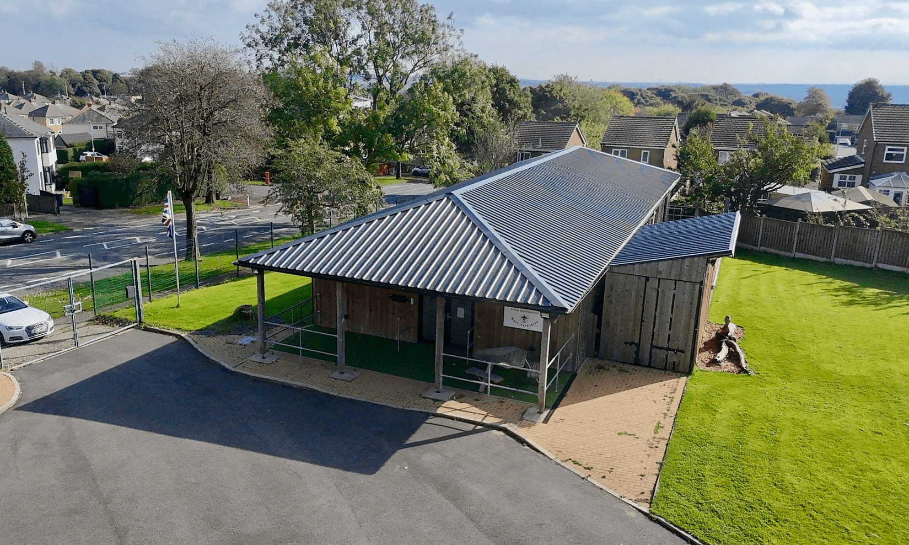

Based at 20th Bradford South Scout HQ, Netherlands Ave, Low Moor, Bradford, BD6 1EH
Fun, friendship, and adventure for our youngest members!
Try new activities and make new friends each week.
Discover new skills and adventures together.
Challenge yourself, explore the outdoors, and build leadership skills.
All sections meet during term time.
Monday · 18:00 – 19:00
Tuesday · 18:30 – 19:45
Thursday · 18:30 – 20:00
Friday · 18:30 – 20:30
📍 20th Bradford South Scout HQ
Netherlands Ave, Low Moor, Bradford, BD6 1EH